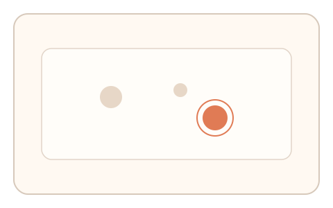
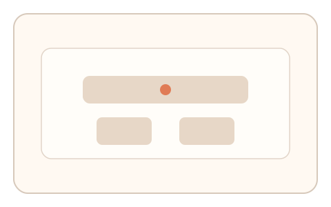
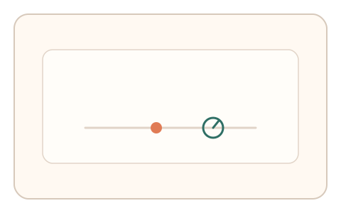

#147
F：意图/现实耦合 × 异步/随机插入（路径/预测误差）
已扩展
随机焦点复核
操作完成后随机询问最先关注区域，记录反应时与点击热区并做异常检测。
概念原文
操作完成后随机询问“最先关注的区域”，记录反应时与点击热区并做异常检测。
验证“即时注意力记忆”而非识别答案。
研究背景
短时注意力记忆会保留最初关注区域的模糊线索，回忆存在典型反应时与空间偏差分布。该特征可用于识别脚本作答。
核心机制
- 任务结束后随机触发焦点复核问题。
- 用户点击或选择最先关注区域。
- 记录反应时与点击位置。
- 与热区分布与基线对比。
用户流程
- 步骤 1：用户完成主任务。
- 步骤 2：系统询问最先关注区域。
- 步骤 3：系统记录反应时与点击位置。
判定信号
反应时
真实回忆需要短时检索。
点击与热区距离
注意力记忆会落在热区附近。
判定逻辑
反应时与点击距离需落在合理区间；过快或离散分布判异常。
对抗面
- 脚本用显著性算法直接选择
- 随机点击伪装
防御与缓解
- 随机化问题形式与选项
- 结合先前停顿/悬停记录
- 多次抽查取一致性
可达性与风险
提供文字选项与键盘选择，避免精细点击负担。
- 记忆负担导致误判
- 问题过多影响体验
可视化状态

状态 1：任务完成
任务结束后保留注意力热区。

状态 2：焦点复核
提示用户选择最先关注区域。

状态 3：反应判定
比较反应时与点击位置。
参考资料
Iconic memory
说明短时视觉记忆特征。
Visual attention
说明注意力分布与记忆线索。